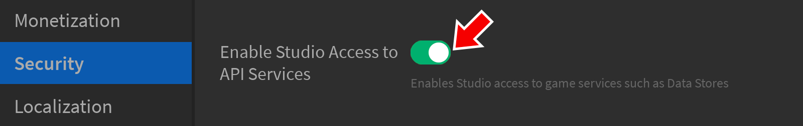

Data Stores
Data Stores
DataStoreService lets you store data that needs to persist between sessions, such as items in a player’s inventory or skill points. Data stores are shared per experience, so any place in an experience, including places on different servers, can access and change the same data.
Enabling Studio Access
By default, experiences tested in Studio cannot access data stores, so you must first enable them.
- Make sure your experience is published (File → Publish to Roblox) to enable Studio access.
- From the Home tab, open the Game Settings window.
- In the Security section, turn on Enable Studio Access to API Services.

- Click Save to register your changes.
Accessing a Data Store
Once you include DataStoreService in a script, access a data store by name using the DataStoreService/GetDataStore|GetDataStore() function. For example:
The server can only access data stores through Script|Scripts. Attempting client-side access in a LocalScript will cause an error.
Scope »
Every key in a data store has a default “global” scope, but you can further organize keys by setting a unique string as a scope for the second parameter of DataStoreService/GetDataStore|GetDataStore(); this will automatically prepend the scope to all keys in all operations done on the data store.
The scope categorizes your data with a string and a separator with “/”, such as:
| Key | Scope |
|---|---|
| houses/User_1234 | houses |
| pets/User_1234 | pets |
| inventory/User_1234 | inventory |
The combination of datastore name + scope + key uniquely identifies a key and all three values are required to identify a key if it has a scope. For example, a global key named User_1234 can be read as follows:
local DataStoreService = game:GetService("DataStoreService")
local inventoryStore = DataStoreService:GetDataStore("PlayerInventory")
local success, currentGold = pcall(function()
return inventoryStore:GetAsync("User_1234")
end)
By contrast, if key User_1234 has a scope of gold, you can only read it as:
local DataStoreService = game:GetService("DataStoreService")
local inventoryStore = DataStoreService:GetDataStore("PlayerInventory", "gold")
local success, currentGold = pcall(function()
return inventoryStore:GetAsync("User_1234")
end)
Managing a Data Store
Setting Data
A data store is essentially a dictionary, similar to a Lua table. A unique key indexes each value in the data store, such as a player’s unique Player/UserId or a named string for a game promo.
| Key | Value |
|---|---|
| 31250608 | 50 |
| 351675979 | 20 |
| 505306092 | 78000 |
| Key | Value |
|---|---|
| ActiveSpecialEvent | SummerParty2 |
| ActivePromoCode | BONUS123 |
| CanAccessPartyPlace | true |
To create a new entry, call GlobalDataStore/SetAsync|SetAsync() with the key name and a value.
GlobalDataStore/SetAsync|SetAsync() that access a data store's contents are network calls that may occasionally fail. As shown above, it's recommended that these calls be wrapped in pcall() to catch and handle errors.
Reading Data
The GlobalDataStore/GetAsync|GetAsync() function reads the value of a data store entry. It requires just the key name of the entry.
GlobalDataStore/GetAsync|GetAsync() caches the data for 4 seconds, so the returned value is not guaranteed to be the one saved on Roblox servers.
Incrementing Data
GlobalDataStore/IncrementAsync|IncrementAsync() changes a numerical value in a data store. This function requires the key name of the entry and a number indicating how much to change the value.
Updating Data
GlobalDataStore/UpdateAsync|UpdateAsync() changes any stored value in a data store. This function requires the key name of the entry plus a callback function which defines how the entry should be updated. This callback takes the current value and returns the new value, based on whatever logic you define.
GlobalDataStore/UpdateAsync|UpdateAsync() is not permitted to yield, so it cannot contain any yielding function like wait().
Set vs. Update
GlobalDataStore/SetAsync|SetAsync() is best for a quick update of a specific key, and it only counts against the write limit. However, it may cause data inconsistency if two servers attempt to set the same key at the same time.
GlobalDataStore/UpdateAsync|UpdateAsync() is safer for handling multi-server attempts because it reads the current key value (from whatever server last updated it) before making any changes. However, it’s somewhat slower because it reads before it writes, and it also counts against both the read and write limit.
Removing Data
GlobalDataStore/RemoveAsync|RemoveAsync() removes an entry and returns the value that was associated with the key.
Ordered Data Stores
By default, data stores do not sort their content, but sometimes it’s necessary to get data in an ordered fashion, such as persistent leaderboard stats. You can achieve this by calling DataStoreService/GetOrderedDataStore|GetOrderedDataStore() instead of DataStoreService/GetDataStore|GetDataStore().
Ordered data stores support the same basic functions as default data stores, plus the unique OrderedDataStore/GetSortedAsync|GetSortedAsync() function. This retrieves multiple sorted keys based on a specific sorting order, page size, and minimum/maximum values.
The following example sorts character data into pages with three entries each in descending order, then loops through the pages and outputs each character’s name/age.
Metadata
There are two types of metadata associated with keys:
| Service-Defined | Every object has default read-only metadata such as the most recent update time and creation time. |
| User-Defined | Through the DataStoreSetOptions object and its DataStoreSetOptions/SetMetadata|SetMetadata() function, you can include custom metadata for tagging and categorization. |
Metadata is managed by expanding the GlobalDataStore/SetAsync|SetAsync(), GlobalDataStore/GetAsync|GetAsync(), GlobalDataStore/UpdateAsync|UpdateAsync(), GlobalDataStore/IncrementAsync|IncrementAsync(), and GlobalDataStore/RemoveAsync|RemoveAsync() functions.
GlobalDataStore/SetAsync|SetAsync()accepts optional third and fourth arguments:- Table of
Player/UserId|UserIds, highly recommended to assist witharticles/managing personal information|GDPRtracking/removal. - A
DataStoreSetOptionsobject on which you can define custom metadata using itsDataStoreSetOptions/SetMetadata|SetMetadata()function.
- Table of
local DataStoreService = game:GetService("DataStoreService")
local experienceStore = DataStoreService:GetDataStore("PlayerExperience")
local setOptions = Instance.new("DataStoreSetOptions")
setOptions:SetMetadata({["ExperienceElement"] = "Fire"})
local success, errorMessage = pcall(function()
experienceStore:SetAsync("User_1234", 50, {1234}, setOptions)
end)
if not success then
print(errorMessage)
end
GlobalDataStore/GetAsync|GetAsync(),GlobalDataStore/IncrementAsync|IncrementAsync(), andGlobalDataStore/RemoveAsync|RemoveAsync()return a second value (DataStoreKeyInfoobject) that contains both service-defined properties and functions to fetch user-defined metadata:DataStoreKeyInfo/GetUserIds|DataStoreKeyInfo:GetUserIds()— Fetches the table ofPlayer/UserId|UserIdsthat was passed toGlobalDataStore/SetAsync|SetAsync().DataStoreKeyInfo/GetMetadata|DataStoreKeyInfo:GetMetadata()— Fetches user-defined metadata that was passed toGlobalDataStore/SetAsync|SetAsync()throughDataStoreSetOptions/SetMetadata|SetMetadata().DataStoreKeyInfo/Version— Version of the key.DataStoreKeyInfo/CreatedTime— Time the key was created, formatted as the number of milliseconds since epoch.DataStoreKeyInfo/UpdatedTime— Last time the key was updated, formatted as the number of milliseconds since epoch.
local DataStoreService = game:GetService("DataStoreService")
local experienceStore = DataStoreService:GetDataStore("PlayerExperience")
local success, currentExperience, keyInfo = pcall(function()
return experienceStore:GetAsync("User_1234")
end)
if success then
print(currentExperience)
print(keyInfo.Version)
print(keyInfo.CreatedTime)
print(keyInfo.UpdatedTime)
print(keyInfo:GetUserIds())
print(keyInfo:GetMetadata())
end
- The callback function of
GlobalDataStore/UpdateAsync|UpdateAsync()takes an additional parameter (DataStoreKeyInfoobject) that describes the current key state. It returns the modified value, the key’s associatedPlayer/UserId|UserIds, and the key’s metadata.
local DataStoreService = game:GetService("DataStoreService")
local nicknameStore = DataStoreService:GetDataStore("Nicknames")
local function makeNameUpper(currentName, keyInfo)
local nameUpper = string.upper(currentName)
local userIDs = keyInfo:GetUserIds()
local metadata = keyInfo:GetMetadata()
return nameUpper, userIDs, metadata
end
local success, updatedName, keyInfo = pcall(function()
return nicknameStore:UpdateAsync("User_1234", makeNameUpper)
end)
if success then
print(updatedName)
print(keyInfo.Version)
print(keyInfo.CreatedTime)
print(keyInfo.UpdatedTime)
print(keyInfo:GetUserIds())
print(keyInfo:GetMetadata())
end
You must always update metadata definitions with a value, even if there are no changes to the current value; otherwise the current value will be lost. This applies to GlobalDataStore/SetAsync|SetAsync(), GlobalDataStore/IncrementAsync|IncrementAsync(), and GlobalDataStore/UpdateAsync|UpdateAsync().
User-defined metadata has the following limits:
- Key length: up to 50 characters.
- Value length: up to 250 characters.
- No limit for the total number of key-value pairs but the total size cannot exceed 300 characters.
Versioning
With versioning, GlobalDataStore/SetAsync|SetAsync() and GlobalDataStore/UpdateAsync|UpdateAsync() create new versions instead of overwriting existing data, and GlobalDataStore/GetAsync|GetAsync() reads the latest version. DataStoreService periodically checks the timestamps of each version and removes versions older than 30 days, but retains the latest version indefinitely.
There are three new APIs for versioning operations:
| Function | Description |
|---|---|
DataStore/ListVersionsAsync|ListVersionsAsync() |
Lists all versions for a key by returning a DataStoreVersionPages instance that you can use to enumerate all version numbers. You can filter versions based on a time range as shown in the code example below. |
DataStore/GetVersionAsync|GetVersionAsync() |
Retrieves a specific version of a key using its version number. |
DataStore/RemoveVersionAsync|RemoveVersionAsync() |
Deletes a specific version of a key. |
DataStore/RemoveVersionAsync|RemoveVersionAsync() also creates a “tombstone” version while also retaining the previous version. For example, if you call RemoveAsync("User_1234"), an attempt to call GetAsync("User_1234") will return nil. However, you can still use DataStore/ListVersionsAsync|ListVersionsAsync() and DataStore/GetVersionAsync|GetVersionAsync() to retrieve the older version, assuming it has not expired.
Versioning is convenient for user support. For example, if a user reports that a problem occurred at 2020-10-09T01:42, you can revert to a previous version using the code below.
Listing and Prefixes
Data stores allow for listing by prefix (the first n characters of a name, such as “d”, “do”, or “dog” for any key or data store with a prefix of “dog”).
You can specify a prefix when listing all data stores or keys, and only objects matching that prefix will be returned. Both functions return a DataStoreListingPages object that you can use to enumerate the list.
| Function | Description |
|---|---|
DataStoreService/ListDataStoresAsync|ListDataStoresAsync() |
Lists all data stores. |
DataStore/ListKeysAsync|ListKeysAsync() |
Lists all keys in a data store. |
AllScopes Property »
DataStoreOptions contains an DataStoreOptions/AllScopes|AllScopes property that allows you to return keys from all scopes in a convenient list; you can then use a list item’s DataStoreKey/KeyName|KeyName property for common data store operations like GlobalDataStore/GetAsync|GetAsync() and GlobalDataStore/RemoveAsync|RemoveAsync(). When you use this property, the second parameter of DataStoreService/GetDataStore|GetDataStore() must be an empty string ("").
local DataStoreService = game:GetService("DataStoreService")
local options = Instance.new("DataStoreOptions")
options.AllScopes = true
local ds = DataStoreService:GetDataStore("DS1", "", options)
When you use the DataStoreOptions/AllScopes|AllScopes property, DataStore/ListKeysAsync|ListKeysAsync() returns every key with their scope as the prefix argument, such as global/player_data_1234 or houses/house3. The default scope is global.
If you enable the DataStoreOptions/AllScopes|AllScopes property and create a new key in the data store, you must always specify a scope for that key in the format of scope/keyname, otherwise the APIs will throw an error. For example, gold/player_34545 will be acceptable with gold as the scope, but player_34545 will lead to an error.
Consider the following data set:
| global/K1 | house/K1 |
| global/L2 | house/L2 |
| global/M3 | house/M3 |
To list these keys either by prefix, scope, both, or neither, reference the following patterns:
| Code Pattern | Page Items |
|---|---|
local DataStoreService = game:GetService("DataStoreService")
local options = Instance.new("DataStoreOptions")
options.AllScopes = true
local ds = DataStoreService:GetDataStore("DS1", "", options)
local listSuccess, pages = pcall(function()
return ds:ListKeysAsync()
end)
|
global/K1 global/L2 global/M3 house/K1 house/L2 house/M3 |
| Code Pattern | Page Items |
|---|---|
local DataStoreService = game:GetService("DataStoreService")
local options = Instance.new("DataStoreOptions")
options.AllScopes = true
local ds = DataStoreService:GetDataStore("DS1", "", options)
-- Since search is by prefix, it can be g, gl, glo, glob, globa, or global
local listSuccess, pages = pcall(function()
return ds:ListKeysAsync("global")
end)
|
global/K1 global/L2 global/M3 |
| Code Pattern | Page Items |
|---|---|
local DataStoreService = game:GetService("DataStoreService")
local ds = DataStoreService:GetDataStore("DS1", "house")
local listSuccess, pages = pcall(function()
return ds:ListKeysAsync("K")
end)
|
K1 (there is only one key in the scope house that starts with K) |
| Code Pattern | Page Items |
|---|---|
local DataStoreService = game:GetService("DataStoreService")
local ds = DataStoreService:GetDataStore("DS1", "house")
local listSuccess, pages = pcall(function()
return ds:ListKeysAsync()
end)
|
K1 L2 M3 |
Error Codes
Requests to data stores may occasionally fail due to poor connectivity or other issues. Wrapping data store functions in pcall() will handle any errors and return a message with an error code.
Error Code Reference »
| Error Code | Error Message | Notes |
|---|---|---|
| 101 | Key name can't be empty. | Check if the key input into the data store function is an empty string. |
| 102 | Key name exceeds the 50 character limit. | Check if the key input into the data store function exceeds a length of 50. |
| 103 | X is not allowed in DataStore. | An invalid value of type X was returned by a bad update function. |
| 104 | Cannot store X in DataStore. | A value of type X returned by the update function did not serialize. |
| 105 | Serialized value converted byte size exceeds max size 64*1024 bytes. | Character count in string cannot exceed 65,536 characters. |
| 106 | MaxValue and MinValue must be integers. | If you're passing a minimum or maximum value to OrderedDataStore/GetSortedAsync|GetSortedAsync() for an OrderedDataStore, both values must be integers. |
| 106 | PageSize must be within a predefined range. | The maximum page size for an OrderedDataStore is 100. |
| 301 | GetAsync request dropped. Request was throttled, but throttled request queue was full. | GlobalDataStore/GetAsync|GetAsync() request has exceeded the maximum queue size and Roblox is unable to process the requests at the current throughput. |
| 302 | SetAsync request dropped. Request was throttled, but throttled request queue was full. | GlobalDataStore/SetAsync|SetAsync() request has exceeded the maximum queue size and Roblox is unable to process the requests at the current throughput. |
| 303 | IncrementAsync request dropped. Request was throttled, but throttled request queue was full. | GlobalDataStore/IncrementAsync|IncrementAsync() request has exceeded the maximum queue size and Roblox is unable to process the requests at the current throughput. |
| 304 | UpdateAsync request dropped. Request was throttled, but throttled request queue was full. | GlobalDataStore/UpdateAsync|UpdateAsync() request has exceeded the maximum queue size and Roblox is unable to process the requests at the current throughput. |
| 305 | GetSorted request dropped. Request was throttled, but throttled request queue was full. | OrderedDataStore/GetSortedAsync|GetSortedAsync() request has exceeded the maximum queue size and Roblox is unable to process the requests at the current throughput. |
| 306 | RemoveAsync request dropped. Request was throttled, but throttled request queue was full. | GlobalDataStore/RemoveAsync|RemoveAsync() request has exceeded the maximum queue size and Roblox is unable to process the requests at the current throughput. |
| 401 | Request Failed. DataModel Inaccessible when the game is shutting down. | DataModel is uninitialized because the game is shutting down. |
| 402 | Request Failed. LuaWebService Inaccessible when the game is shutting down. | LuaWebService is uninitialized because the game is shutting down. |
| 403 | Cannot write to DataStore from Studio if API access is not enabled. | API access must be active in order to use data stores in Studio. |
| 404 | OrderedDataStore does not exists. | The OrderedDataStore associated with this request has been removed. |
| 501 | Can't parse response, data may be corrupted. | System is unable to parse value from response. Data may be corrupted. |
| 502 | API Services rejected request with error: X. | Error X occurred when processing on Roblox servers. Depending on the response, you may want to retry the request at a later time. |
| 503 | DataStore Request successful, but key not found. | The key requested was not found in the data store. Ensure the data for the key is set first, then try again. |
| 504 | Datastore Request successful, but the response was not formatted correctly. | Data retrieved from GlobalDataStore was malformed. Data may be corrupted. |
| 505 | OrderedDatastore Request successful, but the response was not formatted correctly. | Data retrieved from OrderedDataStore was malformed. Data may be corrupted. |
| (TBD) | Metadata attribute size exceeds 300 bytes limit. | The serialized metadata size exceeds the limit. The value 300 is dynamic, if the size changes, the value will also change. |
| (TBD) | UserID size exceeds limit of 4. | The caller provided too many user IDs in the user IDs array. |
| (TBD) | Attribute userId format is invalid. | The user ID provided is not a number. |
| (TBD) | Attribute metadata format is invalid. | The metadata is not a table. |
Limits
There are also limits applied to the data store model. If an experience exceeds these limits, the service will automatically throttle the experience’s data store usage, causing requests to be placed in a queue.
| Request Type | Functions | Requests per Minute |
|---|---|---|
| Get | GlobalDataStore/GetAsync|GetAsync() |
60 + numPlayers × 10 |
| Set (limit is shared among all listed functions) | GlobalDataStore/SetAsync|SetAsync()GlobalDataStore/IncrementAsync|IncrementAsync()GlobalDataStore/UpdateAsync|UpdateAsync()GlobalDataStore/RemoveAsync|RemoveAsync() |
60 + numPlayers × 10 |
| Get Sorted | OrderedDataStore/GetSortedAsync|GetSortedAsync() |
5 + numPlayers × 2 |
| Get Version | DataStore/GetVersionAsync|GetVersionAsync() |
5 + numPlayers × 2 |
| List | DataStoreService/ListDataStoresAsync|ListDataStoresAsync()DataStore/ListKeysAsync|ListKeysAsync()DataStore/ListVersionsAsync|ListVersionsAsync() |
5 + numPlayers × 2 |
| Remove | DataStore/RemoveVersionAsync|RemoveVersionAsync() |
5 + numPlayers × 2 |
| Request Type | Functions | Cooldown |
| Set (same key) | GlobalDataStore/SetAsync|SetAsync()GlobalDataStore/IncrementAsync|IncrementAsync()GlobalDataStore/UpdateAsync|UpdateAsync()GlobalDataStore/RemoveAsync|RemoveAsync() |
6 seconds between write requests. |
DataStoreService/GetRequestBudgetForRequestType|GetRequestBudgetForRequestType().
DataStore/RemoveVersionAsync|RemoveVersionAsync() does not have the 6s cool down period for write requests.
| Component | Maximum Number of Characters |
|---|---|
| Data Store Name | 50 |
| Key Name | 50 |
| Scope | 50 |
| Data (Key Value) | 4,000,000 |
string.len(). The data (key value) is also stored as a string, regardless of its initial type. The size of data can be checked with the HttpService/JSONEncode|JSONEncode() function that converts Lua data into a serialized JSON table.
When a limit is reached, further requests are placed into one of four queues: set, ordered set, get, and ordered get. Requests in a queue are handled in the order they are received and the called function continues to yield as long as its request is queued. If the data store key itself is throttled, the request is temporarily skipped but still in the queue. Each queue has a limit of 30 requests and, when this limit is exceeded, the requests fail with an error code in the 301–306 range indicating that the request was dropped entirely.
Caching
Keys cache locally for 4 seconds after the first read. A GlobalDataStore/GetAsync|GetAsync() call within these 4 seconds returns a value from the cache. Modifications to the key by GlobalDataStore/SetAsync|SetAsync() or GlobalDataStore/UpdateAsync|UpdateAsync() apply to the cache immediately and restart the 4 second timer.
DataStore/GetVersionAsync|GetVersionAsync(), DataStore/ListVersionsAsync|ListVersionsAsync(), DataStore/ListKeysAsync|ListKeysAsync(), and DataStoreService/ListDataStoresAsync|ListDataStoresAsync() don’t implement caching and will always fetch the latest data from the service.
DataStoreOptions/AllScopes|AllScopes property enabled, each data store instance will have its own cache. If you change the value of that key in one data store instance and not the other, you will have inconsistent data.
Best Practices
The following guidelines will help you manage your data more efficiently and take advantage of future improvements.
Create Fewer Data Stores
Data stores behave similarly to tables in databases. Minimize the number of data stores in an experience and put related data in each data store. This approach allows you to configure each data store individually (versioning and indexing/querying) to improve the service’s efficiency to operate the data; as more features become available, this approach also allows you to more easily manage data stores.
Use a Single Object for Related Data
Since the increased maximum object size is 4 MB, there should be enough space to follow this rule. You can fetch all relevant data in one call and use the quota (limit) more efficiently. Additionally, GlobalDataStore/SetAsync|SetAsync() updates all data, so all data for the same player is always in sync. The versioning system versions individual objects rather than the whole data store. When restoring to older versions, self-contained objects are now consistent and useful.
Use Key Prefixes to Organize Your Data
You can filter keys with a certain prefix when calling DataStore/ListKeysAsync|ListKeysAsync(). Consider an experience that supports players having multiple character profiles; you can save keys with a prefix such as /User_1234/profiles/warrior and /User_1234/profiles/mage and use a prefix search with /User_1234/profiles to get a list of all profiles.